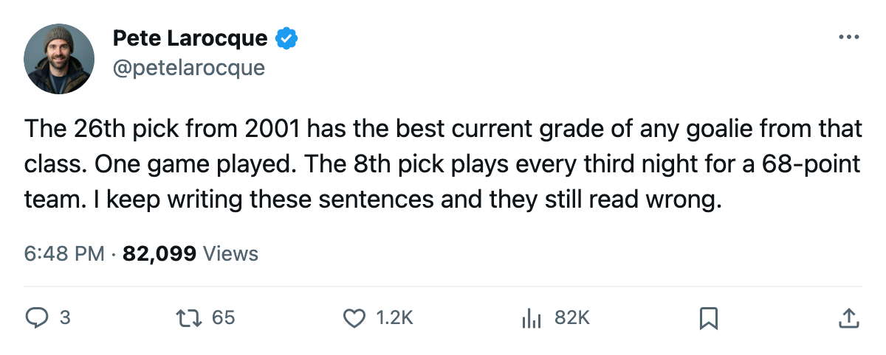
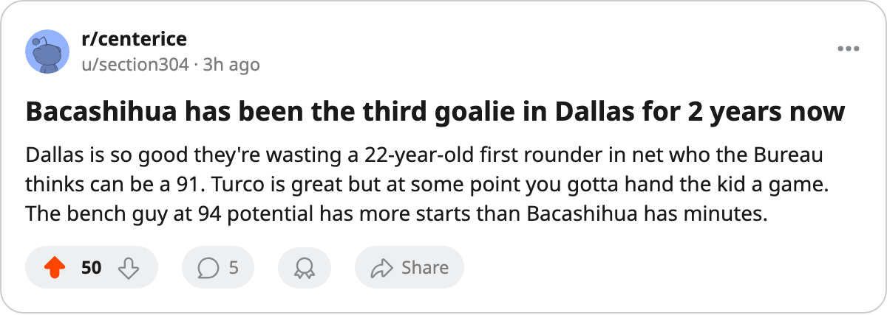

CBJ
CBJThe 8th Pick Plays 43 Games. The 26th Has the Better Grade.
Jason Bacashihua leads every goaltender from the 2001 draft in current overall. He has played 1 game.
 Pete LarocqueScouting editor · The Prospect File
Pete LarocqueScouting editor · The Prospect File
Jason Bacashihua87's overall is 85.  Pascal Leclaire87's is 84. Bacashihua was the 26th pick in 2001. Leclaire went 8th. Leclaire has started 43 games this season. Bacashihua has started 1.
Pascal Leclaire87's is 84. Bacashihua was the 26th pick in 2001. Leclaire went 8th. Leclaire has started 43 games this season. Bacashihua has started 1.
The Bureau's Book places Bacashihua above every goaltender under 23 from the 2001 draft. Four of them are on league rosters. Between them they have 50 games played. Jason Bacashihua owns 1 of those 50. The team that drafted him,  Dallas Stars, took the Presidents' Trophy last season and has 92 points through 71 games this year. In front of him is
Dallas Stars, took the Presidents' Trophy last season and has 92 points through 71 games this year. In front of him is  Marty Turco93 at 94.
Marty Turco93 at 94.
| Player | Draft | Team | Overall | Potential | GP | MPG |
|---|---|---|---|---|---|---|
| Jason Bacashihua | 2001 #26 | DAL | 85 | 91 | 1 | 20.0 |
| Pascal Leclaire | 2001 #8 | CBJ | 84 | 93 | 43 | 60.6 |
 Dan Blackburn87 Dan Blackburn87 | 2001 #10 | NYR | 77 | 97 | 3 | 48.7 |
| Ray Emery82 | 2001 #99 | OTT | 76 | 97 | 3 | 60.0 |
The grades read like a starter's
Bacashihua's glove saves sit at 95. His lateral reads 91, his agility 90, his speed 89. The Development Index has him +4 above a base of 80, putting the published overall at 85 today. The Book gives him 91 potential. He turns 23 in September. He is a first-round pick.
The holes are fighting 51, paddle 51, consistency 52. Those are the attributes a man fixes by playing NHL minutes. He has logged 20 this season and 50 last season. Two NHL games in two years.
The other three have different problems
Pascal Leclaire plays every third night in Columbus for a 68-point club. His potential reads 93, two points above Bacashihua, but his overall sits at 84, one point below. He has done the work the other 3 haven't: 43 starts, 60.6 minutes a night. The Bureau still sees more ceiling in him.
Dan Blackburn carries a 97 potential at  New York Rangers and 3 games played. Ray Emery has the same 97 potential at
New York Rangers and 3 games played. Ray Emery has the same 97 potential at  Ottawa Senators and the same 3 games. Both are in the tier the desk wrote about in February: four goaltenders under 24 with 97 potential, only one of whom played regularly. Bacashihua isn't in that group. His potential is 91, six points lower. His current grade is 1 to 9 points higher than any of them. He still cannot get a crease.
Ottawa Senators and the same 3 games. Both are in the tier the desk wrote about in February: four goaltenders under 24 with 97 potential, only one of whom played regularly. Bacashihua isn't in that group. His potential is 91, six points lower. His current grade is 1 to 9 points higher than any of them. He still cannot get a crease.

Dallas has a reason
Turco is 94.  Ron Tugnutt82 is 86. A 92-point club protecting playoff positioning does not open its crease for a 22-year-old with 70 career minutes, no matter what the grades say on paper. Bacashihua is on $0.90M with 2 years left. Dallas controls a first-rounder with a 91 potential through a window that, right now, it does not need to open.
Ron Tugnutt82 is 86. A 92-point club protecting playoff positioning does not open its crease for a 22-year-old with 70 career minutes, no matter what the grades say on paper. Bacashihua is on $0.90M with 2 years left. Dallas controls a first-rounder with a 91 potential through a window that, right now, it does not need to open.
The deadline is 5 days away. A club tearing down would want a 22-year-old goaltender with a 91 potential, 2 years of team control, and $0.90M against the cap. Dallas has no reason to answer that call. The Index has him moving up. The crease is the only thing in the way, and the crease belongs to a 94.
The 2001 goaltending class has produced 50 NHL games from 4 players under 23. The best-graded man in that class has played 20 minutes this season. His glove saves grade is 95. Marty Turco's overall is 94.

